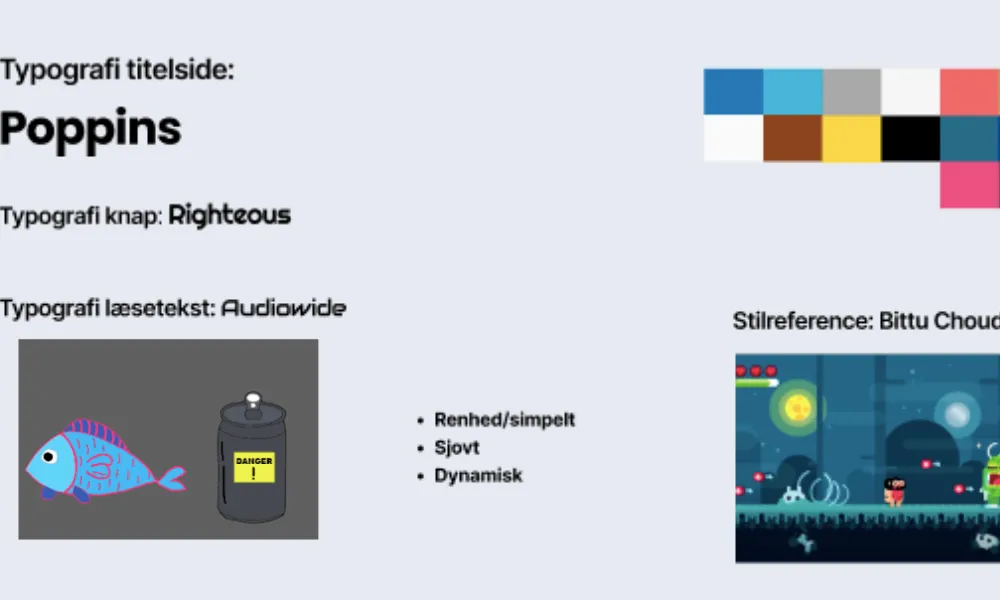
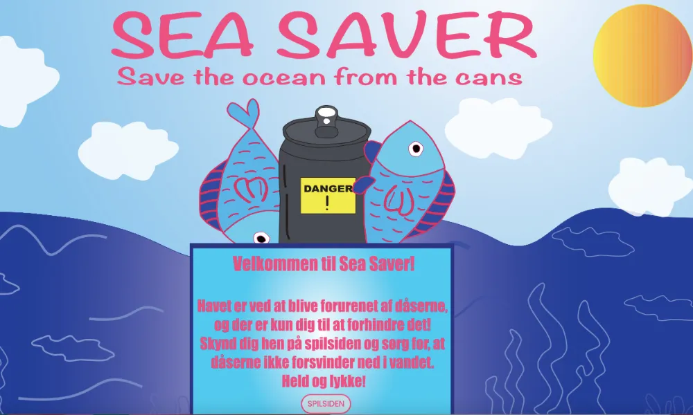
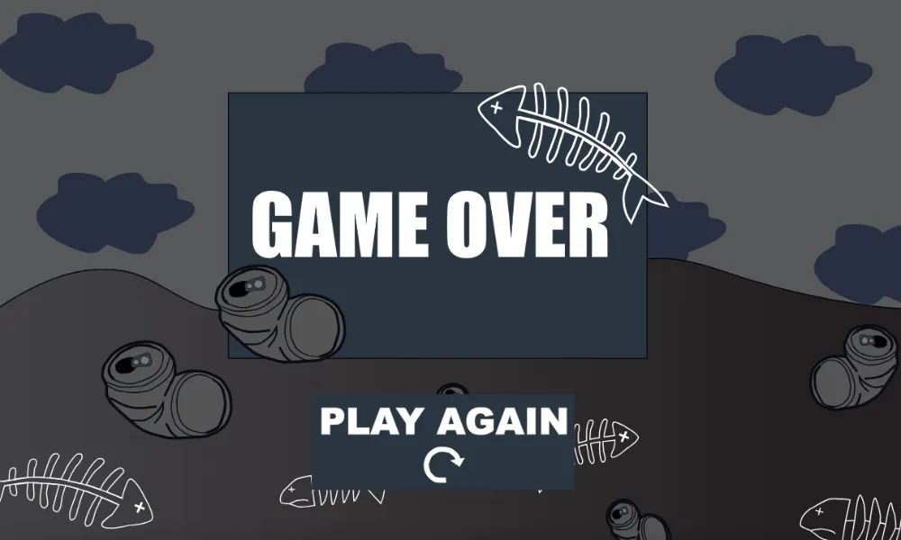
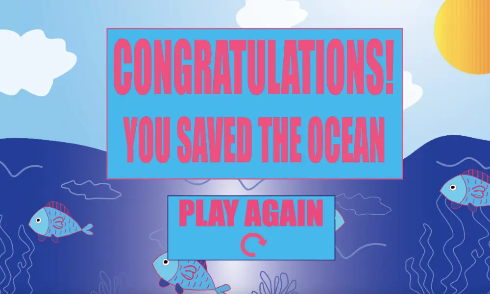

TEMA 4 -
GRUNDLÆGGENDE ANIMATION
En grundlæggende introduktion til programmeringssproget javascript, som kan bruges til at kode dynamiske websites. Herunder arbejde med css-animationer og formgivning af grafiske elementer.
Idéudvikling til spil
I forløb 5 lød opgaven på at udvikle et simpelt spil med brug af CSS-animationer og javascript. Med benspændet, at ens objekter kun kunne falde fra toppen eller flyve ind fra siderne, startede jeg min idéudvikling, hvor jeg hurtigt lagde mig fast på idéen til mit spil "Sea Saver", hvor man skal redde havet fra at blive forurenet af dåser. Jeg udviklede et styletile og fandt inspiration i Bittu Choudharys stil nemlig flat design, der er en minimalistisk stil med enkle todimensionelle elementter i klare farver og med ren typografi. Med min design-analyse på plads vurderede jeg, at mit spil skulle ligge et sted mellem et futuristisk design og et post-modernistisk/antidesign. Jeg gik i gang med at lave skitser til mine figurer til spillet, en fisk og en dåse, som jeg dernæst tegede op i Illustrator og omdannede til svg-filer, der kunne bruges i spillet.

Skærme og elementer

STARTSKÆRM Udover at tegne mine figurer i Illustrator skulle jeg også udarbejde mine spilskærme deri. Herunder min startskærm, game over-skærm og vinder-skærm. Jeg brugte pentool-redskabet til at lave skærmene, og så omdannede jeg dem til svg-filer ligesom figurene. I dette forløb satte jeg mine spilskærme ind i min css som background-image med en aspect ratio i et 16:9-format. I denne sammenhæng brugte jeg også position:absolut, der placerer et element præcist på siden uafhængigt af de andre elementer omkring det.

GAME OVER Da jeg havde lavet strukturen færdig og sat de forskellige skærme ind, oprettede jeg mit javascript-dokument for mit spil, så jeg kunne komme i gang med at få elementerne til at blive aktiveret. Jeg brugte document.querySelector() til at vælge de relevante HTML-elementer som knapper, billeder og tekstfelter, som skulle aktiveres i løbet af spillet. Når spilleren klikker på et objekt, har jeg brugt addEventListener () til at tilføje lyttefunktioner, der reagerer på brugerens interaktion. Fx. at klik på en dåse eller fisk resulterer i en ændring af point og liv.

VINDER-SKÆRM Jeg definerede desuden funktioner som startSpillet() og nytRand(), som er med til at styre spillets flow. Fx. starte spillet, opdatere point eller generere forskellige positioner for objekterne i spillet. For at styre animationer af objekterne har jeg brugt classList.add() og classList.remove() for at tilføje eller fjerne CSS-klasser, som aktiverer eller stopper animationerne. Ved spillets slutning har jeg brugt removeEventListener() for at forhindre utilsigtede handlinger, hvis der er interaktioner efter spillets afslutning.
Sea Saver - det endelige resultat
Undervejs i arbejdet med at få sat mit javascript op, kunne jeg følge med i både mit aktivitetsdiagram og mit state machine diagram, som jeg havde lavet på forhånd. Har havde jeg defineret de forskellige elementers handlinger, så jeg kunne følge med i processerne, mens jeg udarbejdede min struktur og mit spil. Da jeg var nået i mål var det tid til at afprøve spillet. Den færdige præmis blev, at man på 20 sekunder skulle nå at trykke på mindst 10 dåser, beholde alle tre liv (eller mindst ét) og lade fiskene ramme vandet for at vinde. Dette forløb var klart det mest udfordrende for mig, da der var rigtig mange nye elementer at lære og holde styr på. Spillet endte som jeg gerne ville og fik god feedback (dog mente flere, at det godt kunne være lidt sværere), men jeg ser frem til at arbejde mere konkret med javascript på hjemmesider.